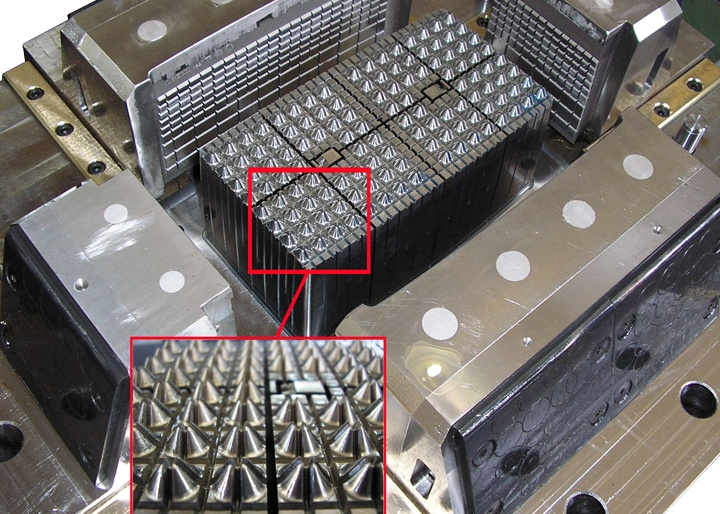
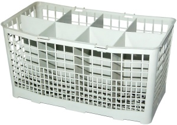

Hanifi Ýçtüzer
Kalýphane Müdürü
BSH Çerkezköy
Haziran 2009, Ýstanbul
Günümüzde tüketici ihtiyaçlarýnýn giderilmesindeki yüksek beklentiler ve üretici sayýsýnýn artmasýna paralel olarak rekabetçi ortamýn hýz kesmeden hatta katlanarak devam etmesi, birçok alanda takip edemediðimiz teknolojik geliþmelerin oluþumunda etkili olmaktadýr.
Endüstriyel ürünlerin geliþiminin hýzla devam etmesinde temel faktörlerden birisi kalýptýr. Endüstriyel ürünlerdeki ihtiyaçlarýn rekabet dahilinde karþýlanmasý kalýpçýlýk sektöründeki hedeflenen ilerlemelerin eþ zamanlý olarak geliþmesini zorlamaktadýr.
Ýç ve dýþ piyasada en çok kalýp üretim talebi sýrasýyla otomotiv, beyaz eþya ve elektronik sanayiden gelmektedir. Burada sizlere uzun yýllar çalýþtýðým beyaz eþya sektöründe kalýbýn fonksiyonu üzerine kýsaca bilgilendirme yapacaðým. Beyaz eþya ürünlerindeki rekabetçi ortam kalite seviyesinden ödün vermeden sürekliliðin devamý için yenilikler yapmayý zorunlu kýlmaktadýr. Sektördeki bu zorunluluk altý ay gibi kýsa sürelerde yeni projelerin yapýlmasý, geliþtirilen projelerin tam zamanlý olarak gerçekleþtirilmesi ve projenin her safhasýnýn sorunsuz bir þekilde geçilmesiyle mümkün olmaktadýr. Yeni ürün projesinin devreye alýnmasý sürecinin en önemli safhalardan birisi yeni makine, kalýp ve teçhizatýn sorunsuz bir þekilde seri üretime alýnmasý ve mevcutlarda da yeni ürün için modifikasyonlar yapýlmasýdýr.
Projelerin baþarý olasýlýðýný ve ürün kalitesini doðrudan etkileyen kalýp yatýrýmlarý sektörde itina ile düþünülen konulardan birisi olmaktadýr. Kalýp yatýrýmlarýnýn doðru yapýlmasý ve projenin baþarýlý sonuçlanmasý için kalýpçý firma tercihleri bazý kriterler göz önüne alýnarak gerçekleþtirilir. Bunlarý þöyle sýralamak mümkündür:
- Teknik bilgi ve dizayn tecrübesinin yeterliliði,
- Makine teçhizat yeterliliði,
- Kalite güvenirliliði,
- Kalýp teslim tarihlerine uyulabilmesi,
- Teslim sonrasý teknik destek ve servis hizmeti güvenilirliði.
Kalýpçý firma seçiminde bu kriterlerden bir tanesinin eksik olmasý, projenizde kýsa veya uzun vadede bazý sorunlar çýkmasý demektir. Yaþanýlan sorunlar bir þekilde giderilebilir. Fakat projenin devreye alýnmasýnda geç kalýnmasý, rakip firmalardan sonra ürünün piyasaya sürülmesi ve sipariþ taleplerinin karþýlanamamasý firmaya aðýr zararlar verebilir.
Örnek uygulama: Bulaþýk makinesi sepeti için kalýp tasarým ve imalatý aþamalarý*

Sektörün büyük firmalarý, yeni projedeki ürünün parçalarýnýn içeride ve dýþarýda hangi kalýpçý firma tarafýndan yapýlabileceðini bildiðinden ve anlaþmalý tedarikçileri olduðundan dolayý projelerin devreye alýnmasýnda fazla sýkýntý yaþamamaktadýrlar. Burada büyük firmalarýn dikkat etmesi gereken en önemli nokta, projedeki kalýp tedarikini saðlayan departmanýn da bilgi birikimini korumasý ve devam ettirmesidir.
Ülkemizdeki kalýp sektörünün son yýllardaki geliþimi, ana ve yan sanayiye büyük kazanýmlar ve ülke ekonomisine çok büyük katkýlar saðlamaya baþlamýþtýr. Kalýbýn her türlüsüne baðlý tüketici ürünleri üreten firmalarýn kalýp ihtiyaçlarýnýn iyi dizayn, en iyi kalite, düþük maliyet ve sonrasýndaki servis hizmetinin karþýlanmasý için yapýlan baskýlar, Türk kalýp sektörünün dünya standartlarýný yakalamasýnda çok büyük etken olmuþtur.
Yurtdýþýna kalýp ihraç eden firma sayýsý ve yurtdýþý açýlýmlarý yapmak isteyen firmalarýn artýþý sektörün geniþlemesinde etkili olacaktýr. Ayrýca, Türkiye sanayisinin teknolojik ilerlemesine, teknik alandaki istihdam oranýn artýþýna katký saðlayacaktýr. Ýç ve dýþ piyasadaki kalýp talep oranlarýndaki büyüme, kalite seviyesindeki istikrar, teknik bilgi birikiminin devam ettirilmesi ve iç piyasada yeni kalýpçý firmalarýnýn artýþý ile rekabet ortamýnýn oluþmasý, kalýpçýlýk sektöründe geliþime katký saðlayacaktýr.
Kalýp firmalarýnýn yeni açýlýmlar yaparken olasý riskleri de dikkate almalarý, sektörün güçlü kalmasýnda ve geniþlemenin istikrarlý oluþunda etkili olacaktýr.
Kaynak: www.UKUB.org.tr/bilgi_bankasi_detay.asp?id=1
*Not: Fotoðraflar, Sema Plastik Kalýp ve Makina San. ve Tic. Ltd. Þti. web sitesinden alýnmýþtýr;
www.semakalip.com.tr